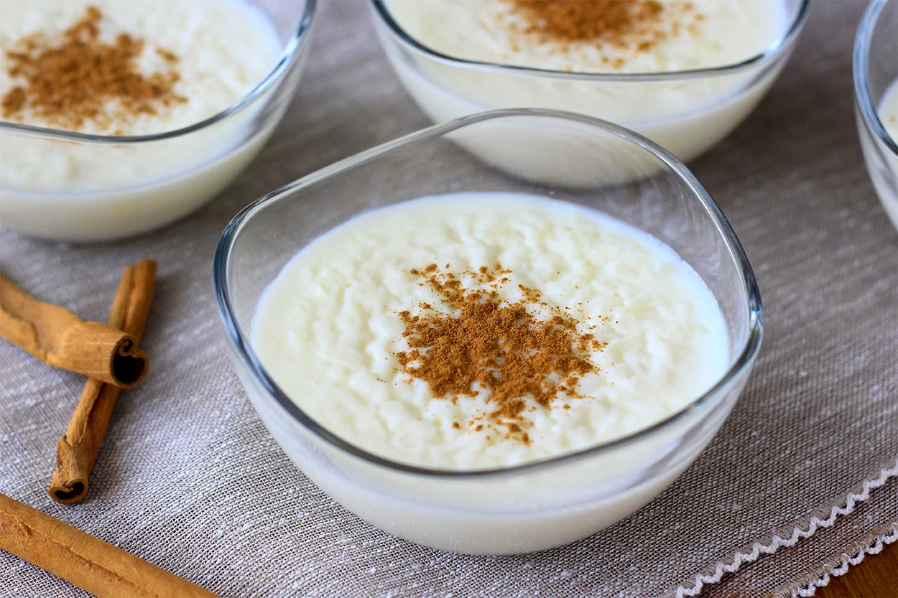
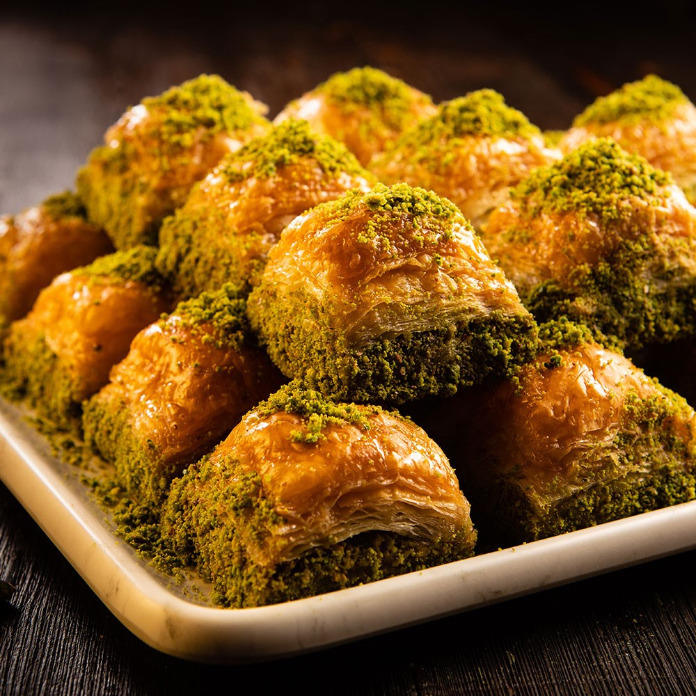
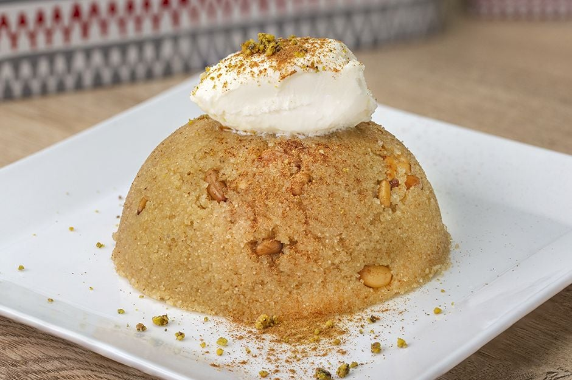
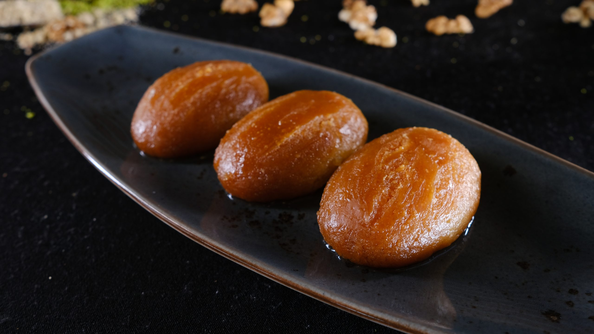

DESSERTS
-

- 1/2 tea cup rice (3 tablespoons/40 grams)
- 2 water glass hot water (400ml)
- one liter milk
- one water glass granulated sugar (180 grams)
- 2 tablespoon (heaping) wheat starch
- one tea cup This (150ml)
- Place the rice, which you have washed only once in water, into the pot and add 2 cups of hot water and start cooking it over low heat. Meanwhile, stir gently from time to time.
- When the rice absorbs the water and becomes mushy, add the milk. Stir and continue stirring occasionally until the milk boils. After boiling, reduce the heat and cook over low heat, stirring, for another 8-10 minutes.
- Then add sugar and mix. Wait for it to boil again and boil it this way over low heat for another 4-5 minutes.
- To add the starch, put it in a bowl and mix it with 1 tea glass of water.
- Mix and add to the pot at the same time. If you add it little by little, you will prevent the risk of clumping. After mixing, cook until it thickens slightly. Put it on low heat and cook for another 1-2 minutes, then remove it from the stove.
- Distribute the rice pudding mixture into the bowls with a ladle.
- After it cools down at room temperature, leave it in the refrigerator for at least 2 hours, preferably up to 1 evening. Before serving, take it out of the refrigerator and let it sit for 5 minutes, sprinkle with cinnamon and serve.
- Rice pudding recipe is ready!
RICE PUDDING
Ingredıents:

PUMPKIN DESSERT
Ingredıents:
- 500 grams grated pumpkin
- 1 cup granulated sugar
- 1/2 cup semolina
- 1/2 cup milk
- 1/2 cup vegetable oil
- 1/2 lemon juice
- 1/2 teaspoon cinnamon
- Grate the pumpkins and mix them with sugar in a pot. Allow it to sit for a while until the sugar dissolves.
- Then add vegetable oil, semolina, and milk to the mixture, stirring well. The pumpkins will release their juice, but do not drain the liquid; add it to the mixture.
- Place the pot on the stove and cook the mixture over low heat, stirring constantly. Continue cooking until the pumpkins are completely soft.
- After the pumpkins are cooked, add lemon juice, cinnamon, and optional vanilla extract. You can also add chopped walnuts if desired.
- Continue stirring the mixture for a few more minutes and then remove it from the heat
- Optionally, you can garnish the pumpkin dessert with additional walnuts or desiccated coconut.
- Let the dessert cool to room temperature and then refrigerate for a while before serving.

BAKLAVA
Ingredıents:
- 2 cups finely chopped walnuts or pistachios
- 1/3 cup granulated sugar
- 1 teaspoon ground cinnamon
- 1 cup water
- 1 cup granulated sugar
- 1 tablespoon lemon juice
- 1 package phyllo dough (about 16 ounces)
- 1 cup unsalted butter, melted
- Preheat your oven to 350°F (175°C).
- In a bowl, combine the finely chopped nuts, sugar, and ground cinnamon for the filling. Set aside
- Melt the butter in a saucepan or microwave and have it ready for brushing the phyllo sheets.
- Unroll the phyllo dough and cover it with a damp cloth to prevent drying out.
- Place one sheet of phyllo dough in a greased baking dish. Brush it lightly with melted butter. Repeat with about 6-8 layers.
- Sprinkle a generous amount of the nut mixture evenly over the buttered layers.
- Add another layer of phyllo dough and butter. Repeat the process until all the nut mixture is used.
- Finish with a top layer of phyllo dough, brushing each layer with melted butter.
- Using a sharp knife, cut the baklava into diamond or square shapes.
- Bake in the preheated oven for about 45-50 minutes or until golden brown.
- While the baklava is baking, prepare the syrup. In a saucepan, combine water, sugar, and lemon juice. Bring it to a boil, then reduce the heat and let it simmer for about 15 minutes, until slightly thickened.
- Once the baklava is out of the oven, immediately pour the hot syrup evenly over the hot baklava.
- Allow the baklava to cool completely before serving. This helps the syrup to be absorbed, making the baklava moist and flavorful.

SEMOLINA DESSERT
Ingredıents:
- 1 cup semolina
- 1 cup sugar
- 4 cups milk
- 1/2 cup unsalted butter
- 1 teaspoon vanilla extract
- 1 cup water
- 1 cup sugar
- Juice of half a lemon
- In a saucepan, melt the butter over medium heat
- Add the semolina to the melted butter and stir continuously until it turns golden brown. Be careful not to burn it.
- Gradually add the sugar, milk, and vanilla extract, stirring constantly to avoid lumps.
- Cook the mixture over medium heat until it thickens to a pudding-like consistency. This usually takes about 10-15 minutes.
- Once thickened, remove the semolina pudding from heat.
- In a separate saucepan, combine water, sugar, and lemon juice for the syrup.
- Bring the mixture to a boil, then reduce the heat and let it simmer for about 10-15 minutes until it slightly thickens.
- Remove the syrup from heat.
- Pour the hot semolina pudding into a serving dish, spreading it evenly.
- Pour the warm syrup over the semolina pudding, ensuring it covers the entire surface. Allow the semolina tatlısı to cool at room temperature and then refrigerate for a few hours until it sets.
- Before serving, you can sprinkle ground pistachios or shredded coconut on top for added flavor and texture.

SEKERPARE
Ingredıents:
- 1 cup semolina
- 1 cup powdered sugar
- 1 cup desiccated coconut
- 1 cup plain yogurt
- 1 teaspoon baking powder
- 1 teaspoon vanilla extract
- 1/2 cup unsalted butter, melted
- 2 cups all-purpose flour (approximately)
- 2 cups granulated sugar
- 1.5 cups water
- Juice of half a lemon
- In a large mixing bowl, combine semolina, powdered sugar, desiccated coconut, yogurt, baking powder, vanilla extract, and melted butter.
- Gradually add all-purpose flour while kneading until you get a soft, non-sticky dough.
- Cover the dough and let it rest for about 15-20 minutes
- Preheat your oven to 350°F (175°C).
- Take small portions of the dough and roll them into small balls or shape them as rounds, placing each on a baking sheet.
- Flatten each ball slightly with your thumb or the back of a fork.
- Press a whole almond or pine nut into the center of each şekerpare.
- Bake in the preheated oven for approximately 20-25 minutes or until the bottoms turn golden brown.
- While the şekerpare is baking, prepare the sugar syrup. In a saucepan, combine sugar, water, and lemon juice.
- Bring the mixture to a boil, then reduce the heat and let it simmer for about 10-15 minutes until it slightly thickens.
- Once the şekerpare is out of the oven and while it's still hot, pour the warm sugar syrup over the pieces, ensuring they are well-covered.
- Let the şekerpare absorb the syrup and cool to room temperature.
- Serve the şekerpare at room temperature. It's traditionally enjoyed with Turkish tea or coffee